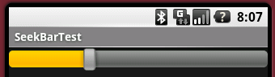

SeekBar使用

- 最大值的设置，调用setMax()方法。
- 现在进度值的设置，调用setProgress()方法。
- 值变更事件处理的追加，调用setOnSeekBarChangeListener()方法，并传递OnSeekBarChangeListener()的实例。
相关类
import android.widget.SeekBar; import android.widget.SeekBar.OnSeekBarChangeListener;
例程源码(Java)
SeekBar seekBar = (SeekBar) findViewById(id.seekBar);
seekBar.setMax(100);
seekBar.setProgress(30);
seekBar.setOnSeekBarChangeListener(new OnSeekBarChangeListener() {
@Override
public void onProgressChanged(
SeekBar seekBar,
int progress,
boolean fromTouch) {
Log.v("onProgressChanged()",
String.valueOf(progress) + ", " +
String.valueOf(fromTouch));
}
@Override
public void onStartTrackingTouch(SeekBar seekBar) {
Log.v("onStartTrackingTouch()",
String.valueOf(seekBar.getProgress()));
}
@Override
public void onStopTrackingTouch(SeekBar seekBar) {
Log.v("onStopTrackingTouch()",
String.valueOf(seekBar.getProgress()));
}
});
例程源码(Resource)
<SeekBar
android:id="@+id/seekBar"
android:layout_height="wrap_content"
android:layout_width="fill_parent"/>